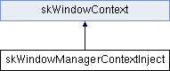

Inheritance diagram for skWindowManagerContextInject:

Public Member Functions | |
| skWindowManagerContextInject (skWindowManager *owner) | |
| void | initialize (void) override |
| Called when the manager instances the derived class. More... | |
| void | processInteractive (bool dispatch=false) override |
| Preforms one event poling loop. More... | |
| void | process (void) override |
| Preforms a continuous loop and sleeps if there are no events to process. More... | |
 Public Member Functions inherited from skWindowContext Public Member Functions inherited from skWindowContext | |
| skWindowContext (skWindowManager *owner) | |
| virtual | ~skWindowContext ()=default |
| virtual void | finalize (void) |
| Called before the manager destroys this class. More... | |
| bool | shouldDispatch () const |
| |
Additional Inherited Members | |
| Protected Member Functions inherited from skWindowContext | |
| skWindow * | find (const SKsize win) const |
| Internal window look up. More... | |
| Protected Attributes inherited from skWindowContext | |
| skWindowManager * | m_creator |
| bool | m_shouldDispatch |
Constructor & Destructor Documentation
◆ skWindowManagerContextInject()
| skWindowManagerContextInject::skWindowManagerContextInject | ( | skWindowManager * | owner | ) |
Member Function Documentation
◆ initialize()
Called when the manager instances the derived class.
Should perform any platform specific initialization.
Implements skWindowContext.
◆ process()
Preforms a continuous loop and sleeps if there are no events to process.
A callback handler should be set in the manager to access events.
Implements skWindowContext.
◆ processInteractive()
|
overridevirtual |
Preforms one event poling loop.
The main idea of this method is to populate input classes from events and access their state later without using event handlers.
- Parameters
-
dispatch If dispatch is set to true, then event callbacks will be issued. /param>
Implements skWindowContext.